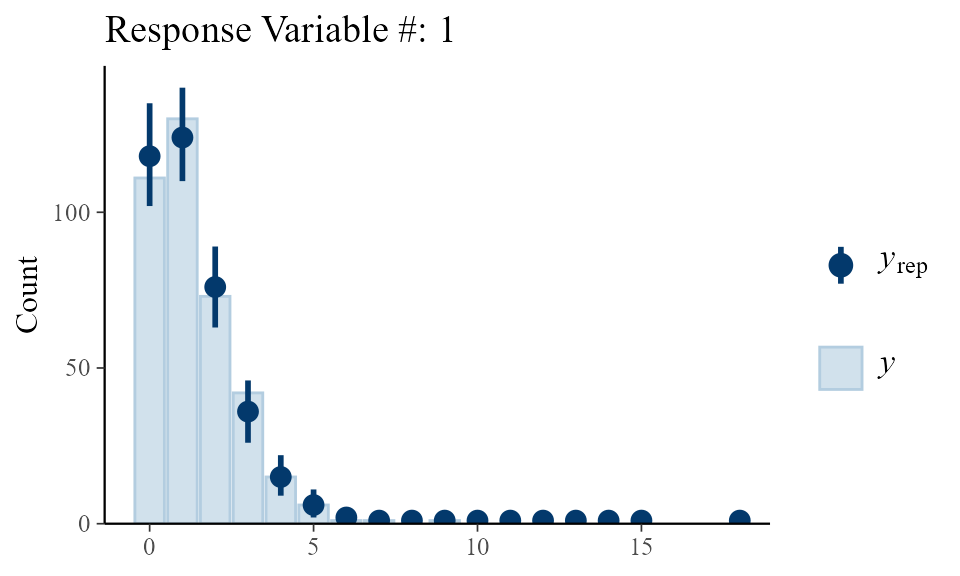
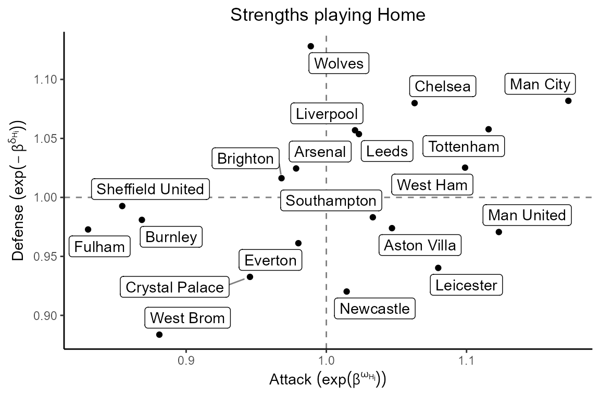
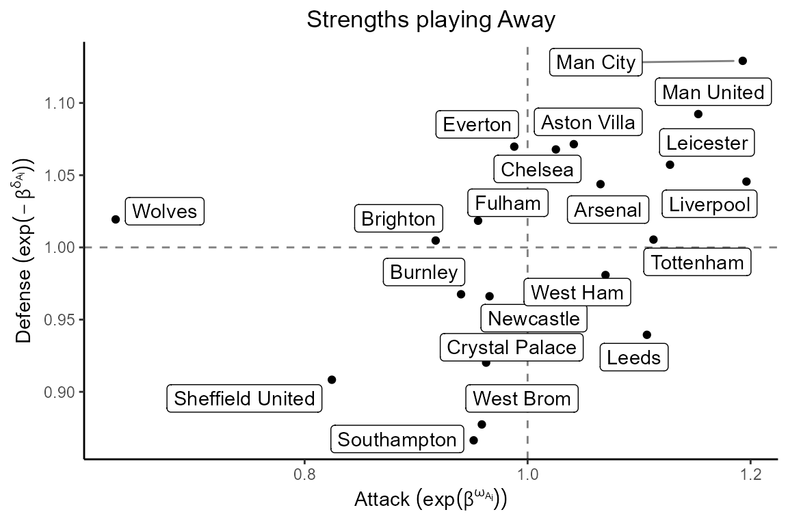

Example Real Data: English Premier League - Season 20-21
Example-Real-Data.RmdSetup
The data contained in the package epl_20_21 corresponds
to the scores of the games of the English Premier League (EPL) during
the season 2020-2021. The data can be accessed as:
data("epl_20_21")
head(epl_20_21)
#> # A tibble: 6 × 4
#> HG AG HomeTeam AwayTeam
#> <dbl> <dbl> <chr> <chr>
#> 1 0 3 Fulham Arsenal
#> 2 1 0 Crystal Palace Southampton
#> 3 4 3 Liverpool Leeds
#> 4 0 2 West Ham Newcastle
#> 5 0 3 West Brom Leicester
#> 6 0 1 Tottenham EvertonFitting
We can fit a bivariate regression model for the goals scored by the home and away team, as stated in the paper (in revision).
We first adjust the data to use the mcmc_cmp
function
y <- cbind(epl_20_21$HG, epl_20_21$AG)
X1 <- model.matrix(HG ~ 1 + HomeTeam + AwayTeam, contrasts = list(HomeTeam = "contr.sum", AwayTeam = "contr.sum"), data = epl_20_21)
X2 <- model.matrix(AG ~ 1 + AwayTeam + HomeTeam, contrasts = list(AwayTeam = "contr.sum", HomeTeam = "contr.sum"), data = epl_20_21)
X <- list(X1, X2)Then, we fit the model as
fit <- mcmc_cmp(y = y, X = X, S = 100000, nburn = 10000, scale_cov_b = 0.6,
scale_cov_beta = 0.01, scale_cov_gamma = 0.02, progress = "bar",
v0 = 50)Convergence Diagnostic
After fitting the model, we can check the convergence visually of the parameters by plotting their trace plots.
list_colors <- c("#D1D1D1", "#BDBDBD", "#333333", "#424242", "#575757",
"#6B6B6B", "#000000", "#A8A8A8", "#949494", "#808080")
list_colors <- rep(list_colors, 10)[1:ncol(fit$posterior_beta[[1]])]
plot(NULL, ylim = c(min(fit$posterior_beta[[1]]), max(fit$posterior_beta[[1]])), xlim = c(0, nrow(fit$posterior_beta[[1]])),
ylab = expression(beta[ij]), xlab = "Iteration",
main = "Traceplot of the parameters associated to the Home Goals")
for(beta in 1:ncol(fit$posterior_beta[[1]])){
lines(fit$posterior_beta[[1]][,beta], col = list_colors[beta])
}
We can check the fitting of the model to the real data using the
function fitting_plot to plot the Rootograms for each
response.

Parameters Estimation
We can also plot the estimated parameters to facilitate their interpretation.
beta1_est <- fit$estimation_beta[[1]]
beta2_est <- fit$estimation_beta[[2]]
off_home <- beta1_est[2:20]
off_home <- c(off_home, 0 - sum(off_home)) #Sum-to-zero constraint
def_away <- beta1_est[21:39]
def_away <- c(def_away, 0 - sum(def_away)) #Sum-to-zero constraint
def_home <- beta2_est[21:39]
def_home <- c(def_home, 0 - sum(def_home)) #Sum-to-zero constraint
off_away <- beta2_est[2:20]
off_away <- c(off_away, 0 - sum(off_away)) #Sum-to-zero constraintWe can find the plots for the strengths of teams playing at home and away below. These plots allow us to identify the teams that had a good season and those with the worst performance. The point (1,1) in the plots represents the mass center. Teams above the horizontal and vertical lines (y = 1, x = 1) performed better than teams located below them.
ggplot(table_teams, aes(x = Attack.Home, y = Defense.Home)) +
geom_hline(yintercept = 1, linetype = "dashed", color = "grey50") +
geom_vline(xintercept = 1, linetype = "dashed", color = "grey50") +
geom_point() +
geom_label_repel(aes(label = Home), box.padding = 0.25, point.padding = 0.5,
segment.color = "grey50") +
labs(title = "Strengths playing Home",
x = TeX("Attack $(\\exp(\\beta^{\\omega_{H_i}}))$"),
y = TeX("Defense $(\\exp(-\\beta^{\\delta_{H_i}}))$")) +
personal_theme
ggplot(table_teams, aes(x = Attack.Away, y = Defense.Away)) +
geom_hline(yintercept = 1, linetype = "dashed", color = "grey50") +
geom_vline(xintercept = 1, linetype = "dashed", color = "grey50") +
geom_point() +
geom_label_repel(aes(label = Home), box.padding = 0.25, point.padding = 0.5,
segment.color = "grey50") +
labs(title = "Strengths playing Away",
x = TeX("Attack $(\\exp(\\beta^{\\omega_{A_i}}))$"),
y = TeX("Defense $(\\exp(-\\beta^{\\delta_{A_i}}))$")) +
personal_theme
We observed that Manchester City, the champion in the 2020-2021 season, was the best team both playing at home and away, followed by Manchester United and Liverpool. Manchester United, however, had a poor defense compared to the average team playing at home, conceding 28 goals at their stadium, Old Trafford. Liverpool was characterized by their strong attack when playing away but had an acceptable performance playing at home. Sheffield United, Fulham, and West Bromwich were relegated that season.
Data available in https://www.football-data.co.uk/